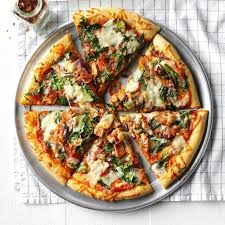

Home
Spinach Bacon Pizza

Spinach Bacon Pizza
This is a one of my favorite quick and easy recipes that everyone in the houshold will enjoy!
The recipe only calls for 5 ingredients and cooks in less than 20 minutes, making it a great option for a last minute or lazy night dish.
Ingredients
- 1 refridgerated pizza crust
- 1/3 cup pizza sauce
- 2 cups fresh baby spinach, thinly sliced
- 8 ready-to-serve fully cooked bacon strips, cut into 1-in. pieces
- 1 cup shaved Parmessan cheese
Steps
- Preheat oven to 450 degrees.
- Place crust in oven for 5 mins.
- Take out crust and spread pizza sauce; top with 1/2 cup of cheese, spinach, and bacon. Sprinkle the rest of the cheese on top.
- Place pizza back in the oven and bake for 13-17 more mins.
- Cut into slices and enjoy!